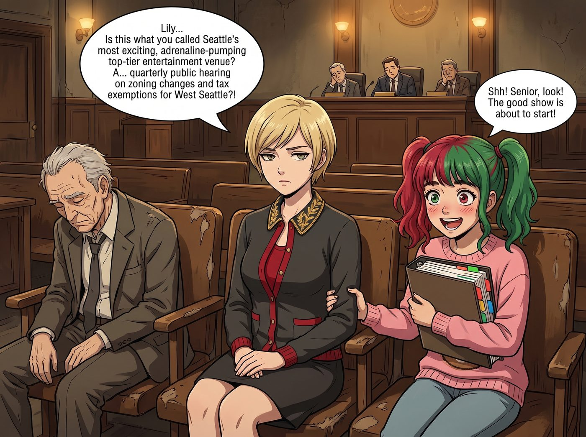
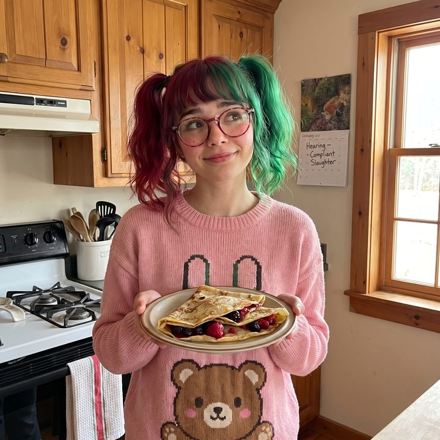

實習生的迪士尼樂園


為了答謝實習生幫自己從無良基金經理手裡合法敲詐回幾百萬美金的管理費與罰息，Victoria Chase 決定展現一下老錢家族的慷慨。
在一個陽光明媚的週六早晨，名媛穿著一身剪裁得體的粗花呢套裝，戴著墨鏡，將一把借來的瑪莎拉蒂車鑰匙在指尖優雅地轉了一圈。
「聽著，Lily。今天妳是 Chase 財團的頂級 VIP。」Victoria 豪氣干雲地宣佈，「不管是西雅圖市中心的頂級水療中心，還是需要提前半年預訂的米其林三星法式餐廳，或者妳想去精品店裡把他們那個配貨制度砸個稀巴爛——隨妳挑。今天所有的帳單，都由我來買單。我們去好好玩一天。」
正在為多肉植物澆水的 Lily 停下了動作。她轉過頭，大眼睛裡閃爍著一種前所未有的、宛如看見迪士尼樂園般的狂熱光芒。
「真的去哪裡都可以嗎，Victoria 學姐？」Lily 的聲音因為激動而微微發抖。
「當然。妳值得這個世界上最頂級的娛樂。」Victoria 驕傲地抬起下巴。
一、意想不到的頂級娛樂
兩小時後。
Victoria 穿著她那身價值兩萬美金的高定套裝，面無表情地坐在西雅圖金縣市政廳一間散發著陳年地毯霉味、燈光昏暗的第三聽證室裡。
她左手邊是一個正在打瞌睡的退休老頭，右手邊是一排掉漆的木質座椅。而坐在她身邊的 Lily，正襟危坐，懷裡抱著一本厚厚的彩色標籤活頁夾，雙頰因為過度興奮而泛著紅暈，大眼睛死死盯著前方主席台上的幾位昏昏欲睡的市政委員。
「Lily……」Victoria 壓低聲音，咬牙切齒地問，「這就是妳說的西雅圖最刺激、最讓人血脈噴張的頂級娛樂場所？一場……西雅圖西區商業用地變更與稅收減免季度公開聽證會？！」
「噓！學姐，快看！好戲要上場了！」Lily 激動地抓住 Victoria 的袖子，彷彿坐在雲霄飛車第一排。
主席台上，一位西裝革履、油光滿面的房地產開發商代表正打開簡報，口若懸河地向市政委員們推銷一個佔地廣闊的大型豪華商場建案。他強調這個建案將帶來多少就業機會，並以此為籌碼，要求市議會批准一項高達四千五百萬美金的十年期物業稅豁免。
「看到了嗎，學姐？」Lily 在 Victoria 耳邊興奮地用氣音解說，就像在看一場世界盃決賽，「他正在試圖用州法典裡的多戶型住宅免稅條款來偷換概念！但他簡報上的建築容積率，根本沒有為低收入戶保留法定的百分之二十份額！他這是在進行一場極度危險的邊緣試探！」
Victoria 痛苦地揉了揉太陽穴。她現在明白了，對於一個行政黑魔法師來說，去遊樂園坐過山車根本不叫刺激；看著傲慢的資本家在政府聽證會上因為合規漏洞而身敗名裂，才是她多巴胺分泌的巔峰。
二、合規殺戮的高潮
「接下來是市民公開發言時間。」Lily 深吸了一口氣，眼睛亮得像兩顆星星。她站起身，整理了一下粉色小熊毛衣的下襬，像個準備走上奧斯卡頒獎台的女明星一樣，輕快地走向了會場中央的市民麥克風。
原本昏昏欲睡的市政委員們，看著這個看起來只有高中生年紀、乖巧無比的女孩，紛紛露出了慈祥的微笑。那位開發商也大度地做了一個請的手勢。
「各位委員好，開發商先生好。我是 Lily，一名熱愛西雅圖的普通市民。」Lily 對著麥克風露出了一個極度純潔的微笑，然後翻開了她的活頁夾。
「我非常支持城市的商業發展。但是，」Lily 的語氣突然變得像聯邦最高法院的法槌一樣冰冷而精準，「根據我調閱的州環保署地下水系分佈圖，貴公司計畫向下挖掘的三層地下停車場，剛好切斷了西雅圖西區的二級生態濕地緩衝帶。根據聯邦淨水法案第 404 條，您不僅不能申請四千五百萬的稅收減免，還必須先向美國陸軍工程兵團繳納約一千二百萬的生態破壞保證金。」
全場死寂。開發商臉上的笑容瞬間僵住了。
「另外，」Lily 根本不給對方喘息的機會，迅速翻到下一頁，「您在環境影響評估報告中，將周邊交通衝擊評級定為最低。但根據美國殘疾人法案的戶外通行指南，您拓寬的車道將會把三個街區外的輪椅坡道斜率從法定的 1:12 壓縮到 1:10。這將直接引發司法部民權局的聯邦調查。請問，貴公司準備好面臨集體訴訟了嗎？」
市政委員們的睡意瞬間煙消雲散，他們驚恐地在開發商和這個十九歲女孩之間來回審視。
那位剛才還口若懸河的開發商代表，此刻已經滿頭大汗，結結巴巴地連一句完整的反駁都說不出來。他帶來的律師團隊甚至開始在台下瘋狂翻找法典，試圖確認這個女孩到底從哪裡挖出這些致命的底層條款。
三、實習生的巔峰快感
三分鐘的發言時間結束。在將一個價值數億的建案和四千五百萬的稅收減免徹底用合規性物理核平後，Lily 禮貌地鞠了個躬，邁著輕快的步伐回到了 Victoria 身邊。
「天哪，學姐！妳剛才看到他下巴掉下來的樣子了嗎？」Lily 坐下後，興奮地捂著發燙的臉頰，喘著氣，彷彿剛坐完十次自由落體，「這比去年的分區聽證會還要刺激十倍！那種在規則邊緣將對手合法摧毀的快感，簡直太棒了！」
Victoria 呆呆地看著身邊這個因為手撕房地產財閥而高潮迭起的實習生，再看看台上已經陷入一片混亂、準備宣佈延期審議的市議會，終於無奈地笑了出來。
「好吧，Lily。」Victoria 摘下墨鏡，雖然這並不是她預期的名媛下午茶，但看到那個貪婪的開發商被一個十九歲女孩按在地板上摩擦，她的資本家血液裡也確實湧起了一絲詭異的爽快感，「我承認，這確實是一場頂級的娛樂。妳玩得開心就好。」
四、歸來的秘密
傍晚，當她們提著幾盒從市政廳對面買來的可麗餅回到二號車廂時，Chloe 和 Max 已經等在門口了。
「所以，名媛帶我們的小怪物去哪裡揮霍了？」Chloe 靠在門框上壞笑，「買了幾棟樓？還是買了幾個限量版包包？」
「不，」Victoria 將瑪莎拉蒂的鑰匙扔在桌上，優雅地脫下高跟鞋，「我帶她去摧毀了一棟樓，順便讓幾個華爾街的律師回去重讀了法學院。」
Kate 從廚房探出頭，看著滿臉寫著幸福與滿足的 Lily，欣慰地雙手合十：「看到 Lily 玩得這麼開心，我就放心了。Victoria 真是個體貼的好姐姐呢，一定是帶 Lily 去做了一些充滿愛與正義的事情吧？」
Max 舉起拍立得，拍下了 Lily 捧著可麗餅、還在回味著聽證會上合規殺戮的純真笑臉。她決定永遠不要去追問這個愛與正義背後，到底又埋葬了多少個資本家的商業宏圖。